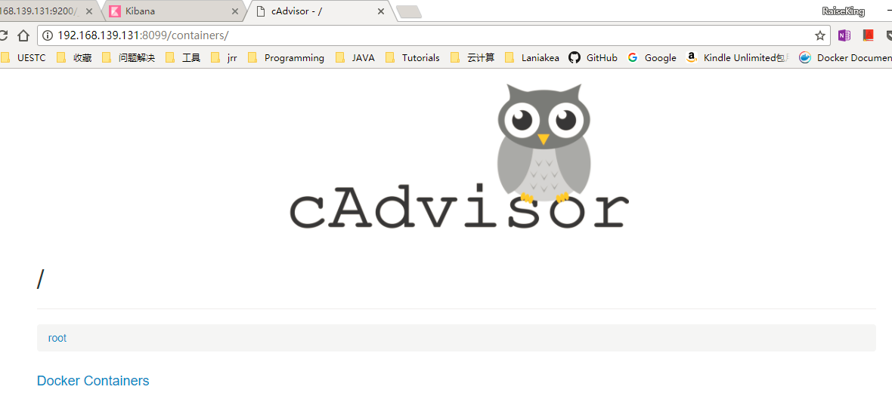
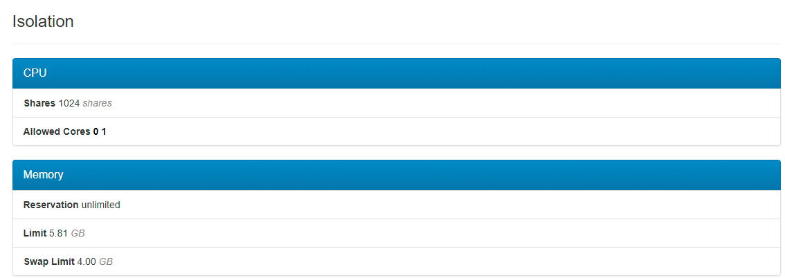
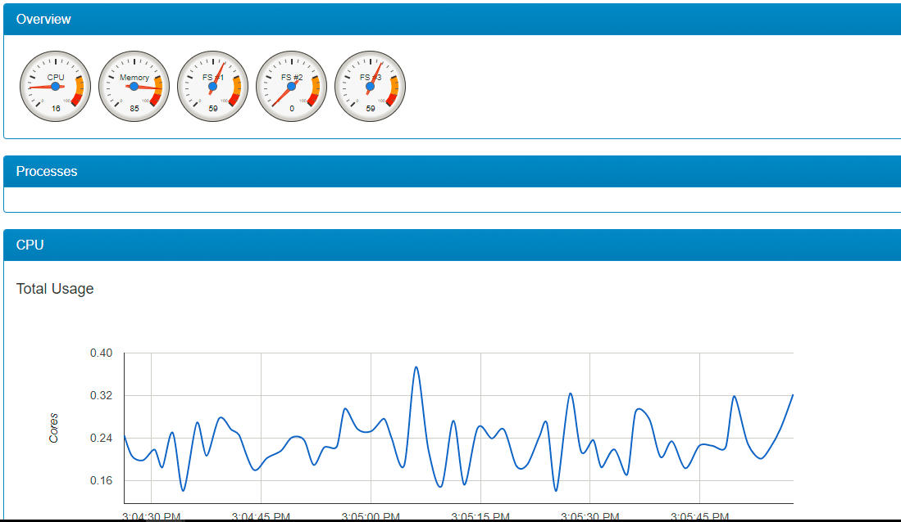

CAdvisor部署
CAdviosr是Google用来监测单节点的资源信息的监控工具, 提供了一目了然的单节点多容器的图表型资源监控功能。
CAdvisor是一个容器资源监控工具，包括容器的内存，CPU，网络IO，磁盘IO等监控，同时提供了一个WEB页面用于查看容器的实时运行状态。CAdvisor默认存储2分钟的数据，而且只是针对单物理机。
由于CAdvisor已经容器化，部署和运行很简单，执行如下命令即可:
$~ docker run \
--volume=/:/rootfs:ro \
--volume=/var/run:/var/run:rw \
--volume=/sys:/sys:ro \
--volume=/var/lib/docker/:/var/lib/docker:ro \
--publish=8099:8080 \
--detach=true \
--name=cadvisor \
google/cadvisor:latest
运行之后，就可以在浏览器打开 http://ip:8099 查看宿主机的容器监控数据了。

以上就是 cAdvisor 的主要功能，总结起来主要两点：
展示 Host 和容器两个层次的监控数据。
展示历史变化数据。
cAdvisor 提供的操作界面略显简陋，而且需要在不同页面之间跳转，并且只能监控一个 host。但 cAdvisor 的一个亮点是它可以将监控到的数据导出给第三方工具，由这些工具进一步加工处理。我们可以把 cAdvisor 定位为一个监控数据收集器，收集和导出数据是它的强项，而非展示数据。
CAdvisor原理简介
CAdvisor运行时挂载了宿主机根目录，docker根目录等多个目录，由此可以从中读取容器的运行时信息。docker基础技术有Linux namespace，Control Group(CGroup)，AUFS等，其中CGroup用于系统资源限制和优先级控制的。
宿主机的/sys/fs/cgroup/目录下面存储的就是CGroup的内容了，CGroup包括多个子系统，如对块设备的blkio，cpu，内存，网络IO等限制。Docker在CGroup里面的各个子系统中创建了docker目录，而CAdvisor运行时挂载了宿主机根目录和 /sys目录，从而CAdvisor可以读取到容器的资源使用记录。比如下面可以看到容器206cc当前时刻的CPU的使用统计。
root@ubuntu:/sys/fs/cgroup/cpu/docker# cat 206cc04057e7b855a97b371e0a756a4dc3ea482045de0c95c47dddf8c7925caf/cpuacct.stat
user 1696
system 581
而容器网络流量CAdvisor是从/proc/PID/net/dev中读取的，通过docker inspect 206cc可以获取上面容器206cc进程在宿主机的PID为12228，可以看到容器所有网卡的接收和发送流量以及错误数等。CAdvisor定期读取对应目录下面的数据并定期发送到指定的存储引擎存储，而本地会默认存储最近2分钟的数据并提供UI界面查看。
root@ubuntu:~# cat /proc/12228/net/dev
Inter-| Receive | Transmit
face |bytes packets errs drop fifo frame compressed multicast|bytes packets errs drop fifo colls carrier compressed
lo: 0 0 0 0 0 0 0 0 0 0 0 0 0 0 0 0
eth0: 10154 88 0 0 0 0 0 0 0 0 0 0 0 0 0 0